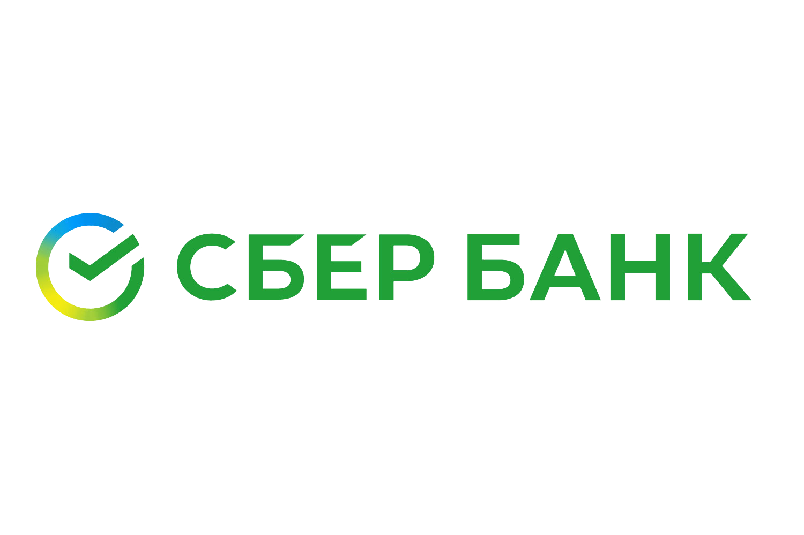
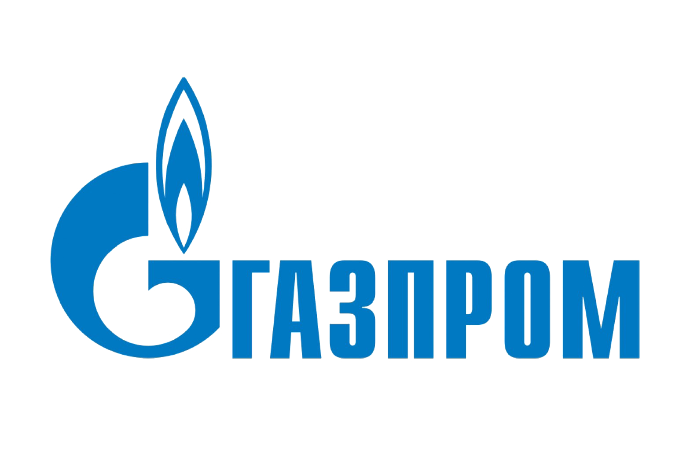
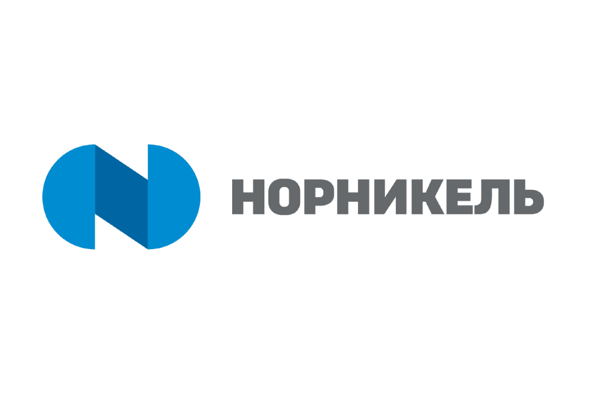
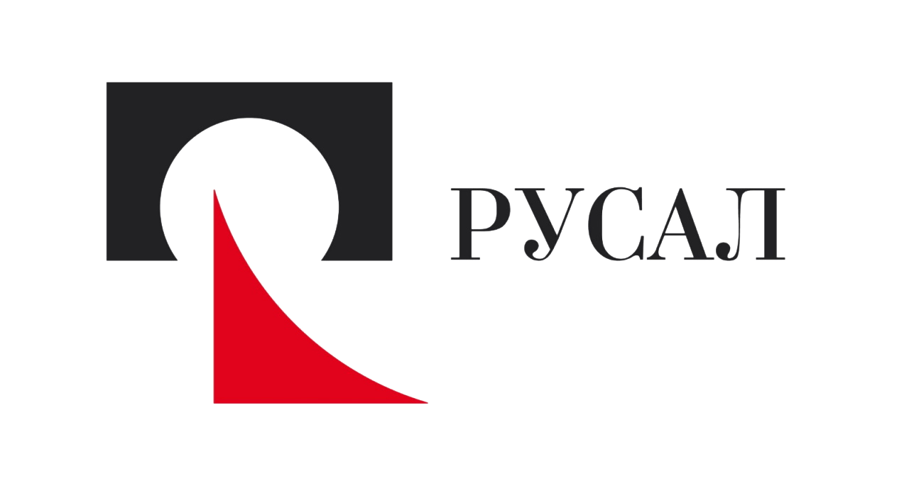
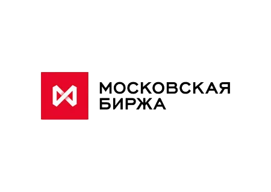

1 Сбербанк
— Сейчас практически все нерезиденты вышли из состава акционеров Сбера, при этом бумаги остаются самыми ликвидными среди российских акций. Сразу после послабления санкций стоит ожидать достаточно бурный рост котировок Сбербанка. Нерезиденты вновь начнут активно скупать фундаментально сильные и технически дешевые акции.

Юрий Азаргаев, инвестиционный эксперт, независимый финансовый советник, эксперт Ассоциации развития финансовой грамотности России:

2 Газпром
— В нефтегазовом секторе еще можно рассмотреть «Газпром». Последняя его котировка была равна 228 рублям, значит, при снижении к 70-100 рублям за бумагу его акции стоит подбирать.
Антон Быков, старший аналитик компании Esperio:
— «Газпром» и без СП-2 имеет достаточно выручки: цена на газ сейчас бьет рекорды и в ближайшее время не изменится, так как Европа пока сильно зависит от российских поставок газа, и ЕС еще предстоит пополнять свои хранилища.
Владимир Сагалаев, финансовый аналитик группы компаний CMS:

3 Норильский никель
— «Норильский никель» — мой фаворит, показывает стабильный рост выручки и выплачивает высокие дивиденды. А помимо этого, производит 40 % всего палладия в мире. Для справки: палладий участвует в системе очистки выхлопных газов у бензиновых и дизельных автомобилей. С учетом санкций запада против России цена на палладий на товарно-сырьевой бирже растет изо дня в день, прибавляя по 3-7 % ежедневно. А это значит, что компания, которая сейчас переориентирует свой экспорт, получит сверхдоходы от этого сегмента. Что, несомненно, должно сказаться на акциях компании.
Юрий Азаргаев, инвестиционный эксперт, независимый финансовый советник, эксперт Ассоциации развития финансовой грамотности России:

4 РУСАЛ
Еще интересен «РУСАЛ» — ведущая компания мировой алюминиевой отрасли, крупнейший производитель алюминия с низким углеродным следом. Большая доля акций у нерезидентов и давно уже под зарубежным управлением.

5 Московская биржа
Отдельно можно рассмотреть бумаги Московской биржи. Это компания, которая получает прибыль при любом кризисе. И лишь в эти непростые дни, когда фондовый рынок не работает, ее доходы снизились. Но при этом не упали до нуля, и все благодаря валютной секции Московской биржи. Комиссии по валюте высоки как никогда, а спрос не уменьшается. Все это положительно скажется на выручке и прибыли компании. Плюс не стоит забывать, что главный бенефициар MOEX — это Центральный банк Российской Федерации.
